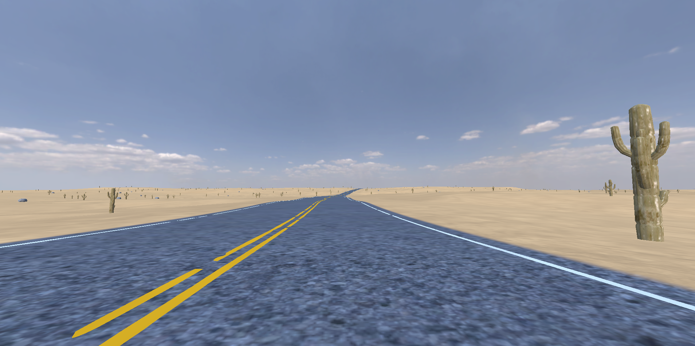
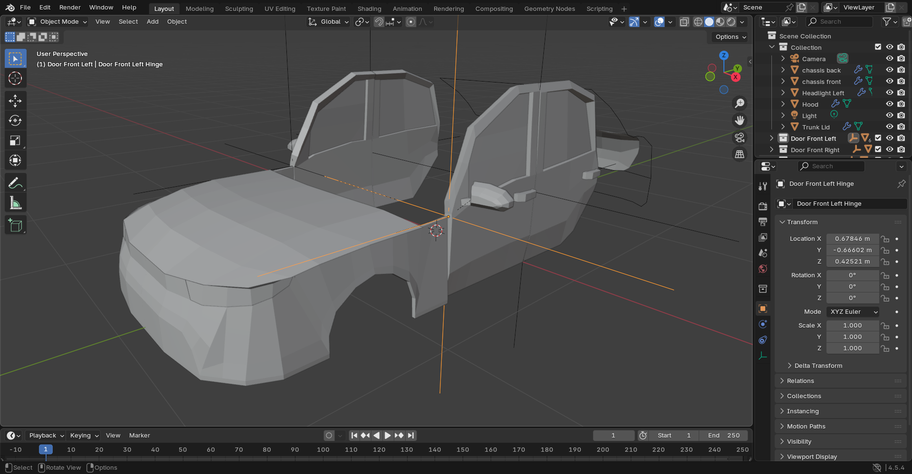

A while ago I attempted to vibe-code a clone of The Long Drive. I got infinite terrain, props, biomes, a road... and that's it.

What killed the project wasn't the AI code actually, it was that I couldn't find a model of a car with the appropriate movable parts (and ideally not based directly on a real car.) I tried modelling a car in Blender but my motivation fizzled out and I abandoned the project.

The "game" is playable, so I've put it up here. Unfortunately the lighting looks worse than it does in the Godot editor preview. There's not much in the game but it is oddly hypnotic to drive along through the desert. Also I have made the code public here. If you want to build upon it, feel free to.
The game uses creative commons assets. As there aren't any in-game credits, I will list them here.